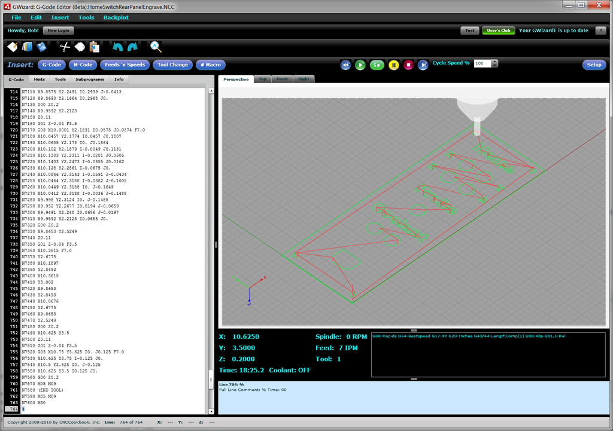
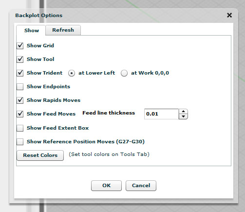
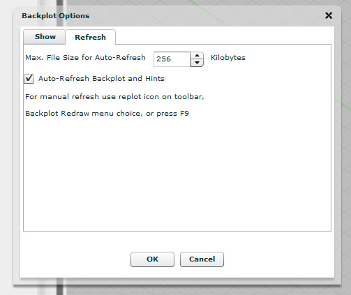
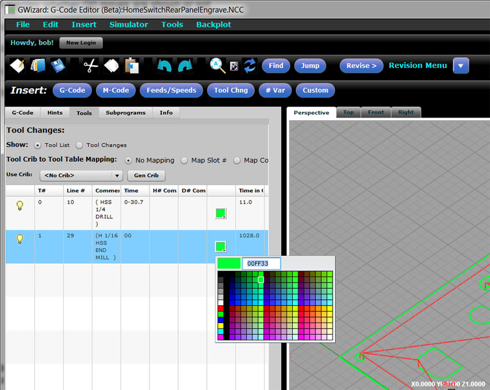
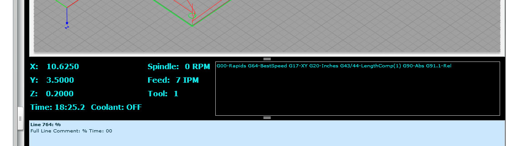
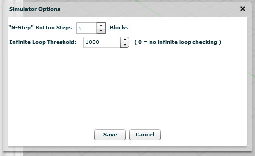
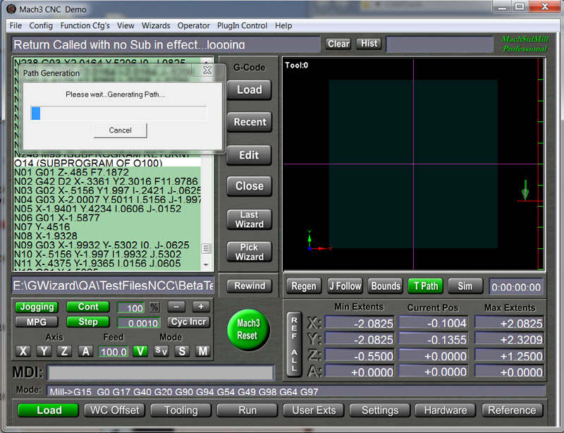
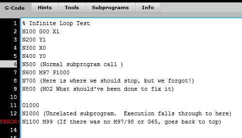
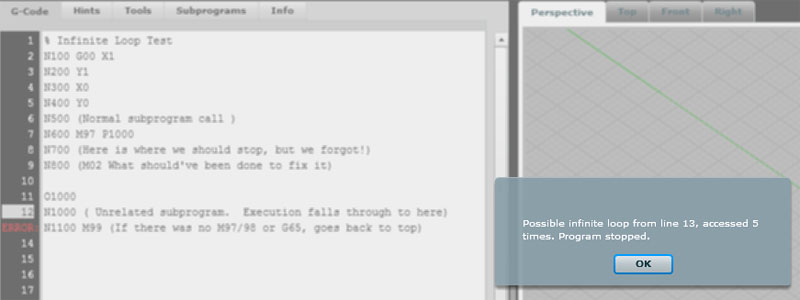
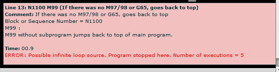

The G-Wizard Editor's CNC Simulator is the portion of the software that understands how to execute g-code and can present the backplot as well as debugging information. It is operational in some form or fashion all the time, as the backplot is always available. However, when we refer to the "Simulator", we generally mean to refer to the running of the CNC Simulator step by step. We call that "Simulator Mode" or "Debugger Mode", because it is intended to help you understand and debug the execution of your g-code.
When that mode is operational, the GWE screen will display simulator information directly below the backplot, like this:

G-Wizard G-Code Editor Simulator Mode: A G-Code Debugger...
Backplot Options
Before we get into Simulator Mode, let's describe the Backplot Options that are available. They're accessed from the Backplot menu, and there are two tabs on the popup. The first is for the "Show" options that control which elements are displayed in the Backplot:

Backplot Show Options...
You have the ability to control visibility of the following by turning the check boxes on or off:
- Grid: The grid that provides a reference may be turned on or off.
- Tool: The simulated 3D tool and holder may be turned on or off.
- Trident: The trident that shows which direction X, Y, and Z grow larger (positive) may be turned on or off, and it can be displayed in the lower left of the backplot or always at work 0, 0, 0.
- Endpoints: This options displays the endpoints of each segment with a marker so it is easier to see where segments begin or end.
- Rapids Moves: This option toggles whether G0 moves are shown or not.
- Feed Moves: This option toggles whether non-G0 moves are displayed, and if so, controls the line weight used to draw them.
- Feed Extent Box: GWE will show an extent box when you attempt to rotate or pan a complex backplot. This option controls whether the extent box should be shown all the time.
- Reference Position Moves: This option controls whether reference moves, triggered by G27 to g30, will be plotted.
The Refresh tab contains the options that control how often the Backplot is replotted:

Backplot Refresh Options...
You can set the maximum file size that will auto-refresh after any change. Files larger than this size require manual refresh by pressing the refresh button on the Toolbar or by menu pick. You can also press the F9 key to cause a refresh. The checkbox allows you to turn off auto-refresh even for files smaller than the maximum size.
Options for Backplotting Individual Tools
The visibility and color of backplot for individual tools may be controlled via the Tool tab:

The visibility and color of individual tools may be controlled from the Tools tab...
Starting CNC Simulator Mode
The easiest way to transition from normal editing mode to CNC Simulator Mode is to press the rewind button on the Simulator Control Buttons on the toolbar:
Simulator Control Buttons...
In Edit Mode, G-Wizard places a subtle underline that appears by the rewind to remind you this is how to start CNC Simulator Mode:
Note the underline of the Rewind button to remind you how to start CNC Simulator Mode...
Take a minute to run your mouse cursor over each button. There is a tool tip that pops up to describe the button's function:
- Rewind: Rewind to the beginning (first block) of the g-code program.
- Cycle Start: Start executing g-code. If Single Block is in effect, each press executes 1 block.
- Cycle Start 5 Step: Same as Cycle Start, except if Single Block is in effect, each press executes 5 blocks.
- Feed Hold: Stop execution at the conclusion of the current block. You may restart by pressing Cycle Start.
- Stop: Stop the program.
- Single Block: Activates Single Block mode where execution is paused after each block as though Feed Hold were pressed.
As you can see, these controls are the same as you'll find on most machine control panels. They're your tools for controlling the execution of the g-code so you can see how the program works.
The Tortoise, Hare, and Percent between them control the g-code playback speed. Click the Tortoise to slow way down, or click the Hare to speed up to 100%. The numeric speed control accepts a number from 1 to 100% execution speed. GWE will remember the last speed selected when you exit.
The Simulator Instrument Cluster
GWE provides an instrument cluster directly under the backplot that provides information about what the g-code is doing in addition to what you see on the backplot:

The Simulator Instrument Cluster...
This is similar to the information provided by your machine's controller. You get to see the coordinates on the various axes, as well as the spindle's status, the feedrate, the current tool, how long the program is predicted to take to execute to this point, and the status of coolant. In addition, you will see information about what modes are active. For example, in the screen shot above, we can see several:
- G00: The motion mode is G00, so the machine will move at rapids speed when commanded to move.
- G64: Another aspect of the motion mode is whether the machine moves at G64 "Best Speed" or G60 "Exact Stop".
- G17: The currently selected plane for arcs and canned cycles is G17, the XY plane.
- G20: The currently selected units are Inches.
- etc.
Simulator Options Popup
The Simulator Options Popup is accessible either via the Simulator Menu or by right clicking on the Simulator Control Buttons:

The Simulator Options Popup controls what the 5-Step button on the Toolbar does when clicked (you can also use the Ctrl+Space keyboard shortcut to trigger the 5-Step button). By default, 5-Step executes 5 blocks. Using the Simulator Options, you can change how many steps are taken with each press to be more or less than 5.
Simulator Options also lets you control the Infinite Loop Threshold. This tells how many times the same block has to be executed before GW Editor declares it is likely in an infinite loop. If you want to turn this checking off, just set the value to zero.
What Else Can We Do In CNC Simulator Mode?
There is a lot of other information available to you on the GWE screen:
- The G-Code panel shows the next line to execute with a highlight. The line that just executed is the line preceeding the highlight. You can scroll the G-Code panel to look around, but if you click in the panel to try to edit you'll be asked whether you want to stop the CNC Simulator. You can't edit the program while it is being simulated.
- There is a hint for the highlighted line (the next line to execute, not the one that just executed!) below the Instrument Cluster. You can also open the Hints tab and watch execution line by line there in order to help your understanding. Hints will frequently contain useful information not obvious in the g-code such as the coordinates of the center of an arc.
Exiting Simulator Mode
To exit simulator mode, simply click the Stop button on the Controls, or click the G-Code Edit panel and answer "Yes" you'd like to stop the simulation.
Adding Infinite Loop Detection and Macro Stepping to G-Wizard CNC Editor
I got an inquiry from a G-Wizard G-Code Editor user wanting to know if I could help diagnose a problem he was having. It seems he was trying to figure out why a program that had been output by his BobCAD CAM software was getting an error message out of Mach3. I his post wasn't set up quite right for the Mach3 g-code dialect at first, but his description of the problem was intriguing and sounded deeper than that, so I volunteered to try to help. He had run the code through the Predator Editor/Simulator that comes with BobCAD, but it saw no errors. Mach3 on the other hand was seemingly never finishing the backplot and complaining cryptically that "Return called with no sub in effect":

Mach3 executing g-code that infinite loops...
I hadn't had the pleasure of seeing this behavior from Mach, so I thought I'd learn something knew by helping diagnose the problem. I also suspected I could make GWE better in the process, and no sooner did I load this machinist's program than GWE promptly locked up and started acting hung. Excellent--that which does not kill us, makes us stronger!
It didn't take long looking at the program in Notepad to see what was happening. Looks like BobCAD wants to create a subprogram for each machining operation and then call them one after the other at the top. It can make reading the code less than obvious, but it is not that uncommon a practice. Unfortunately, for some reason, the software forgot to put a program stop after it was done calling the subprograms for each operation. This caused execution to just fall through the bottom of the main program and start executing the very first subprogram all over again. The subprogram wasn't expecting this, since it was designed to have been directly called with an M98 (if you're not following these g-codes, don't worry, I will explain them in our G-Code tutorial). When the subprogram gets done, it uses an M99 to return to the block right after the M98. Therein lies the problem. If it was never called by M98, there is no return location.
Most g-code dialects, when faces with an M99 and no M98 having called will simply start executing the very first line of g-code at the top of the program again. It's not the worst choice they could've made, but I would've preferred an error (or alarm as the CNC world likes to call them) be issued. Instead, we get a situation where this particular program was going round and round doing everything over and over again.
Now that Mach3 message makes a bit more sense. We did indeed issue a "Return" (M99) without a "Sub" (M98) in effect, and so we are indeed "looping". In fact, we're engaged in what the software world calls an "Infinite Loop". Absent the operator stopping the program, it will never stop of its own accord. The fix is easy--just add an M02 in the right place to stop before falling through to the subprogram.
Here is some sample code that demonstrates the problem:

An infinite loop in g-code...
This code just draws a little 1" square, then it calls the subprogram at line N600. Execution would jump down to the sub and run until it hits the return "M99" at line N1100. Right below the sub call I have commented out the line that should've been there to stop further execution--see line N800. We needed an M02 right there to stop the program. Since there is nothing there but a comment, the g-code falls on through N800 and starts executing the subprogram below. DOH!
How about a little help finding these things, G-Wizard?
Well why not help, it isn't that hard. Two capabilities were added to the GW CNC Editor--the ability to detect and automatically stop infinite loops, and a simulator enhancement that makes it easy to step through and see what all those M97/98/99, G65, and GOTO (if you run Fanuc Macros) commands are doing.
First, the infinite loop detection. Since we can't get a loop unless the code, um loops, GWE keeps track of every block that causes execution to deviate from just going to the next block below. It keeps a count of how many times the deviation is made. In an infinite loop, one or more of those deviations (let's just call them "Goto's" because that's what they are) will happen an infinite number of times. Now I don't know about you, but I'm not getting any younger, and I don't want to wait that long to see if I have an infinite loop. Therefore, GWE has a "goto limit" defined, and if any particular goto exceeds that limit, it issues a warning message and stops the program. Here is the message for the sample above:

The infinite loop warning tells exactly where the trouble is occuring and what the suspicious behavior is...
As you can see, the warning tells exactly where the trouble is (line 13), and what the suspicious behavior is--line 13 issued a goto 5 times, which is the default goto limit. Now does that guarantee an infinite loop? No, it doesn't. You could easily have written code that calls the same routine more than 5 times intentionally. However, we have to pick a limit somewhere to work with, and that's one that won't let the loop get too carried away before we intervene and have a look at it. If we are running a program where we expect to run more than 5 times, we can use the Simulator Options menu to change the limit:
Simulator Options...
In addition to the popup, we add an appropriate Hint to help diagnose what's going on and draw attention to the line in question. You can see line 13 is lit with the red "ERROR" indicator. Here is the Hint for that line:

Hint for a possible infinite loop...
BTW, can you see how that hint makes it a whole lot easier to understand what all is going on there than just starting at "N1100 M99"? Hints are designed to refresh your memory, teach you what the g-codes mean, and provide information that is otherwise hard to come by for deeper understanding. Isn't that just what we need from a CNC Simulator?
Okay, that makes it pretty easy to tell what's going on when there is an infinite loop. But, understanding what's going on when a program is jumping and looping all over the place is still not easy. As I was stepping through this BobCAD-generated code, I realized we need a way to navigate that focuses on the goto's. Perhaps you've seen or even tried out our fancy "5 Step" function. It does so much more than the normal "Step" or "Single Blocking" we see in most simulators. If you right click the "5 Step" toolbar button (or you can use the Simulator menu), you'll get the Simulator Options--refer to the screenshot above. "5 Step" gives us the ability to:
- Step by any number of blocks, the default being "5", hence the name.
- Step to the next rapid move. This is likely a retract that lets you get past a bunch of feedrate moves you're not interested in.
- Step the the next Dwell (G04). This is a sneaky one. Dwells typically don't affect a program much. So you can stick one in and use it as a bookmark. Use "5 Step" to jump to your next "bookmark".
- Step to next toolchange (M06). Always a popular time saver.
- Step to the next subprogram op or GOTO. This is our new addition.
Stepping to a goto makes navigating through these subprograms fast and easy. If you're going to be working on a g-code program with a lot of goto-activity, I'd recommend you get a flavor for the high level workings by using the "Step to the next GOTO" option first. That'll let you breeze through, see who is calling who, and understand the high level structure of the g-code. You'll also see the effects of each subprogram unfolding on the backplot. Take a note or two on what you want to revisit and dig deeper into. Drop some G04 Dwells, switch to stepping to dwells, and you'll be able to focus on those areas.
What to read next
Let's check out GWE's g-code wizards; they help you get the g-code write the first time.